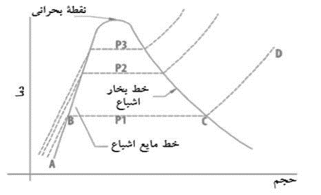

نحوه استفاده از جداول
-
جدول اشباع
این جدول، ویژگی های ماده مورد نظر رو، در بازه اشباع یا بخار مرطوب به ما میده. کافیه فشار یا دمای ماده مورد نظر رو بهش بدیم تا نتیجه رو بهمون ارائه کنه. از اونجایی که هر دمایی، با فشار مختص به خودش برابری میکنه، این جدول فقط یک ورودی میگیره و هرچیزی رو که بخوایم برامون محاسبه میکنه.
-
جدول مافوق گرم
برای بدست آوردن ویژگی های ماده در بازه مافوق گرم، باید اول خط عمودی یا فشارش رو مشخص کنیم. سپس کافیه دمای دلخواهمون رو وارد کنیم و در نهایت، بعد از مشخص کردن اینکه “چی میخوایم” نتیجه مورد نظرمون رو محاسبه میکنیم.
-
جدول مادون سرد
دقیقا مثل مافوق گرم، برای بدست آوردن ویژگی های ماده در بازه مادون سرد، باید اول خط عمودی یا فشارش رو مشخص کنیم. سپس کافیه دمای دلخواهمون رو وارد کنیم و در نهایت، بعد از مشخص کردن اینکه “چی میخوایم” نتیجه مورد نظرمون رو محاسبه میکنیم.
توضیح کامل تر
هر ماده خالص، از نظر ترمودینامیکی میتونه تو ۵ حالت مختلف وجود داشته باشه:
- مادون سرد یا ompressed
- مایع اشباع یا saturated fluid
- بخار مرطوب
- بخار اشباع یا saturated vapor
- بخار فوق داغ یا super heated vapor
خب حالا اصلا اینا چی هستن؟ چرا اینقدر داغونه اسماشون؟
بیا نمودار زیر رو تحلیل کنیم تا درکشون راحت تر باشه:
حالت هایی که راجبشون بالاتر صحبت کردیم رو میتونیم تو نموداربالا مشاهده کنیم. هر کدوم از خطوط عمودی (که بالای هرکدوم یک P نوشته شده) نمایانگر ماده در فشار های مختلفه. مثلا خط فشار P1 در نظر بگیرین. این خط به ما میگه اگه ماده مورد نظر رو تو یک ظرف با فشار ثابت P1 بریزیم و نمه نمه دما رو بالا ببریم به ترتیب اتفاقات زیر میفته:
-
از A تا B: در این بازه، ماده در حالت مادون سرد قرار داره. جایی که کاملا مایع هست و هیچ بخاری در اون مشاهده نمیشه. از اینجا دما رو زیاد میکنیم تا میرسیم به نقطه B. نقطه B، نقطه مایع اشباع نام داره و نقطه ای هست که مایع دراون شروع به بخار شدن میکنه.
-
از B تا C: ماده در این بازه، در حالت اشباع یا بخار مرطوب خواهد بود. در این بازه، ما هم شاهد بخار و هم شاهد مایع هستیم، هرچی جلو تر بریم، مایع کمتر و بخار بیشتر میشه. اما نکته مهم اینجاست که در این بازه دما زیاد نمیشه! و فرآیند تبخیر شدن، کاملا با افزایش حجم اتفاق میفته. جلو میریم و میریم تا به نقطه C میرسیم. نقطه بخار اشباع، جایی که مایع کاملا به بخار تبدیل شده و یک قطره مایع هم تو ظرف ما نمونده.
-
از C تا D: از نقطه بخار اشباع کار رو ادامه میدیم و دما مجددا شروع به بالا رفتن میکنه. در این بازه، ما در حالت مافوق گرم یا سوپرهیت هستیم. نقطه D، میتونه تا بینهایت ادامه داشته باشه (البته منظور از بینهایت، مقادیر بسیار بالاست) و این حالت انتهایی ای هست که ماده میتونه در اون حضور داشته باشه.
دو نکته رو در مورد این نمودار باید در نظر داشته باشیم:
- منحنی ای که میبینین، نشون دهنده الگویی هست که خطوط عمودی فشار بر طبق اون رسم میشن. اگه دقت کنین میبینین که هرچی فشار بالا تر میره طول بازه بخار مرطوب یا اشباع کمتر میشه. در انتهای بالای منحنی، شاهد نقطه ای به نام نقطه بحرانی هستیم که در اون نقطه، هیچ حالت اشباعی وجود نداره و مایع مادون سرد، بلافاصله به بخار مافوق گرم تبدیل میشه.
- ما اینطور نموداری رو برای فشار و حجم هم داریم. یعنی خطوط عمودی بر حسب دما خواهند بود و محور های نمودار، بر حسب P و V. از اینجا نتیجه میگیریم که هر دمایی از یک ماده، یک فشار متناظر با خودش داره که باعث اشباع شدنش میشه. ساده بگیم، اگه آب رو تو فشار ۰.۰۶ کیلوپاسکال قرار بدیم و دما رو روی ۰.۰۱ درجه سیلیوس تنظیم کنیم، به آب اشباع خواهیم رسید.